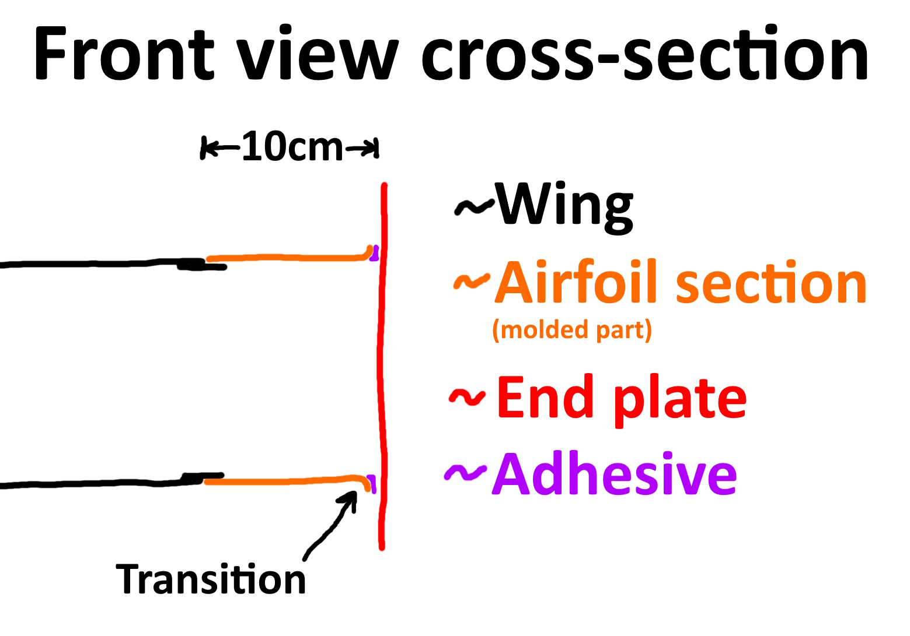
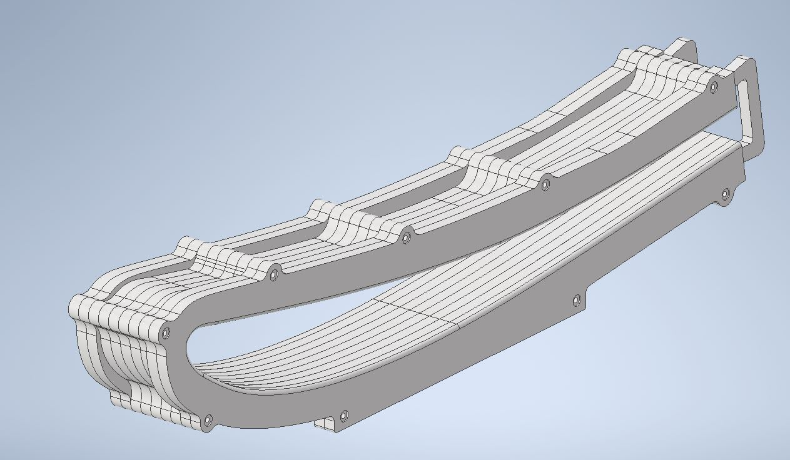
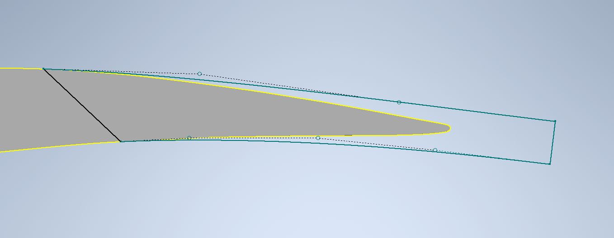
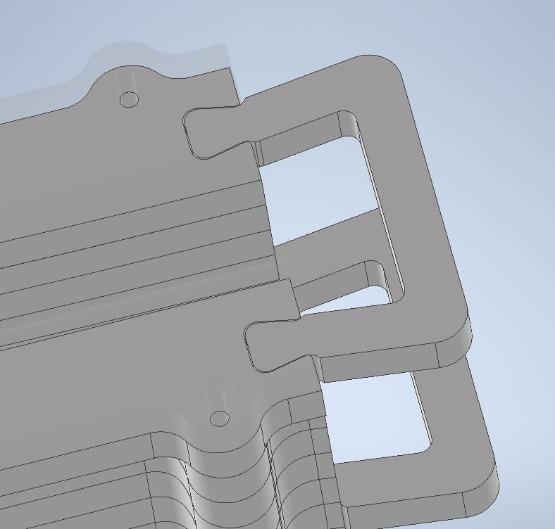
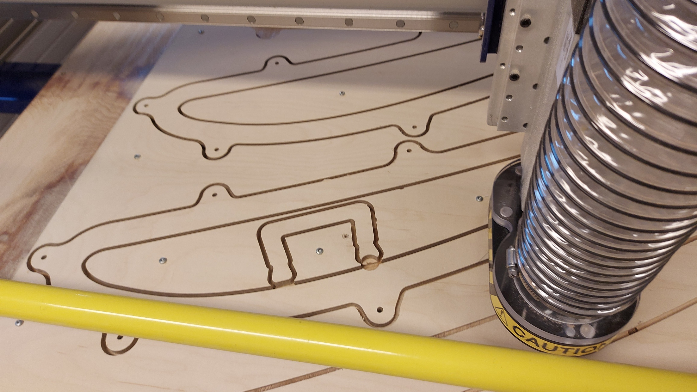
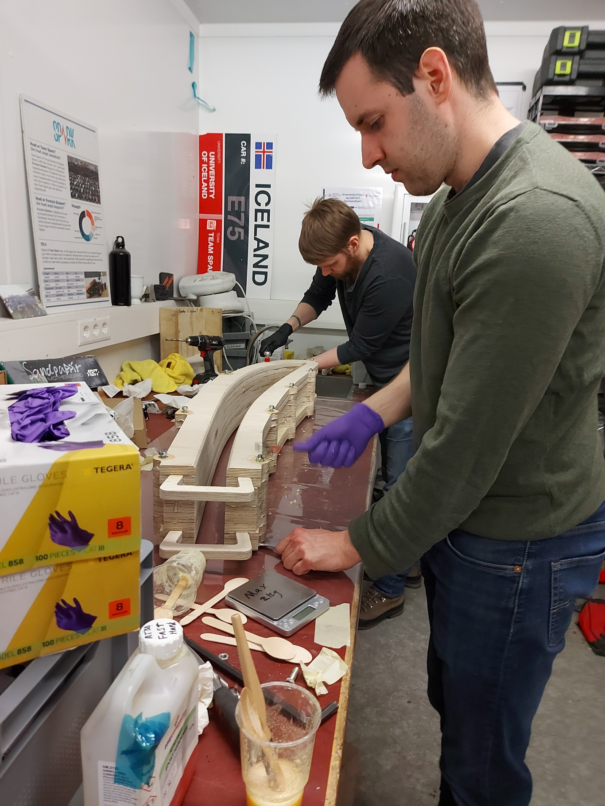
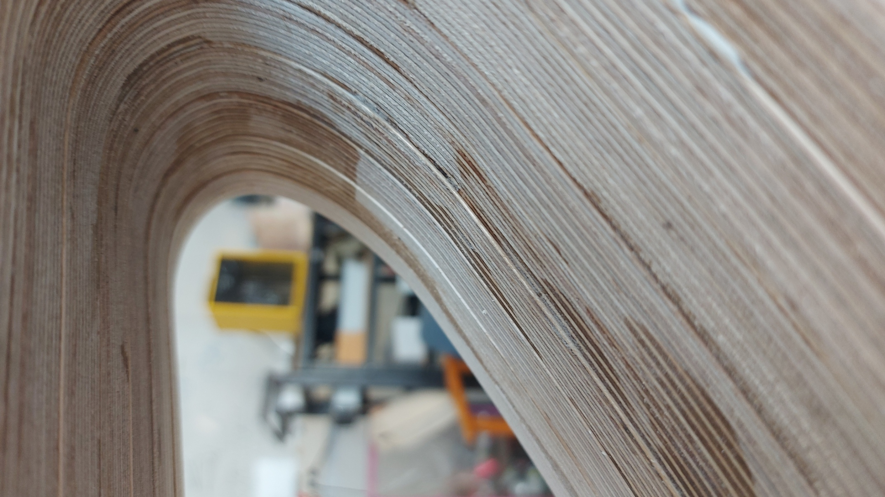
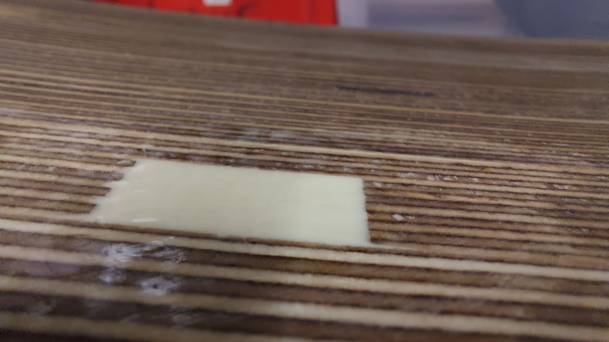

Final project - Machining a wingtip mold
Group members: Arnar Gylfi Haraldsson, Daníel Eggertsson, Óðinn Eldon Ragnarsson
The idea
Óðinn and his father finished building an airplane in the summer of 2022. When the airplane was weighed, it turned out to be about 20 kg heavier than desired. Any weight taken out of the plane is given back directly as useful load, e.g., to carry more fuel, baggage, or heavier passengers. Since Óðinn had been working a lot with carbon fiber through Team Spark he got the idea of replacing some parts with carbon fiber to reduce weight. The airplane has a few glass fiber composite parts that can feasibly be replaced. The airplane kit was originally made in around 1990 so the composite parts in it were probably not optimized and are resin rich because they were made using the wet layup method. This effectively means that they are heavier than they need to be. Based on some rough calculations, the wingtips are at least 1 kg heavier than what can realistically be made using carbon fiber composite. Here you can see a picture of a kitfox with the old style wingtip.
The general design of the wingtip is taken from the most modern version of the Kitfox, the model 7. Óðinn’s plane is a model 3. The STi wing for the model 7 features a flat wingtip. There is also another kitfox model 4 in Óðinn’s hangar that has a custom wingtip in this style. That particular plane saw no change in handling characteristics, a small increase in top speed and a marginal increase in stall speed. This is all to say that the design is not entirely untested. Here is a picture of a Kitfox model 7 wingtip.
Design of the wingtip
The primary features of the wingtip are the airfoil section, the transition, and the end plate. The airfoil section is a 10 cm wide continuation of the wing. On one side it is connected to the outermost rib in the wing and on the other there is the transition. The transition is a 6 mm radius fillet from the airfoil section to the end plate. The end plate is a flat plate that connects to the radius and is at a 90° angle to the airfoil section. The following diagram perhaps explains this better.
Design of the mold
It made most sense to keep the end plate a simple flat plate and concentrate the complexity into one mold. This meant we needed to make the transition and the airfoil sections in one mold. Ideally the part should have the molded surface facing out, which means the mold surface needs to be facing inwards. I considered neglecting this and accepting the sanding work that would ensue to flatten and smooth the outside surface. This would have vastly simplified the mold design and the layup procedure. However, since we didn’t want this to be a single-use mold we opted to put in the sanding work on the mold and have less work to do on the part.
It was a requirement that the mold be vacuum tight and rigid since we want to infuse the wingtip. Infusing the wingtips is key to weight savings since it gives a lower resin ratio in the composite. There are left and right wingtips which are mirrored. It would effectively double the work to make two molds. To spare the group from that work we figured out a way to let the same mold make both sides. The airfoil section is the same on the left and right side, but the transition is mirrored. By having a central airfoil section and a fillet on each side for the transition region we can make both the left and right wingtips on the same mold. There also had to be some stabilizing feature on the open end of the mold. We ultimately added handles there which are positioned using a dovetail joint and permanently bonded into the mold during assembly. See the final mold below.
The only feasible way we can think of to make the mold better while still using this design archetype is to have it wide enough that both wingtips could be infused at once. A mold feature could be placed on the midplane to serve as a cut line to split the de-molded part into the two wingtips. That design however, would run into issues with removing the part from the mold after releasing it from the surface.
This geometry is infeasible to manufacture in one piece using a 3-axis CNC mill (2.5-axis if you prefer). since it’s infeasible for the cutter to reach the required depth without the gantry or the tool holder colliding with something. The undercut corners would also have required a second operation from the other side, ignoring all the other issues. With this in mind it appears to be the best option to cut plates and bolt/bond them together to form the mold. The mold was designed with this in mind from the start. In total there are 9 plates of 18 mm plywood in the mold. The material was originally supposed to be 20 mm MDF but due to availability and concerns with toxic off-gassing when machining, we opted for plywood. Plywood yields a lower quality surface when machined and chips significantly more so for molds it is an inferior material, but it was sufficient for the purposes of this project.
The final notable feature of the mold is that the airfoil section expands towards the trailing edge. This is done so that it is feasible to sand and lay fabric into the mold. The carbon fiber part out of the mold will not fit neatly on the wing but it will have to be flexed to match the trailing edge and will be bonded in place when shaped by the wing. To this end a few centimeters were added at the end of the airfoil section, which will be cut off when the trailing edge is bonded. A potential issue with this is that the transition region will have to deform to an extent that it may not be happy with. As such we will lay up the radius only using fibers at a 45° orientation to reduce the lengthwise stiffness. Here is an image showing how the trailing edge of the mold was expanded.
Drawing the mold
The shape of the airfoil was drawn based on a picture of a spare rib. This image was imported into Inventor and traced using splines. This method isn’t perfectly accurate, but it does get pretty close to the real shape. For the sake of simplicity, the mold was originally drawn as a single solid and later split into the plates to be machined. We made 9 alignment holes with 7.9 mm diameter seeking a tight tolerance for M8 threaded rods. This later proved to be too tight of a tolerance, so we had to drill the holes out with an 8 mm drill. The alignment holes were placed at least 50 mm away from the transition fillet to give space for vacuum sealant tape. The mold is naturally stable when standing with the concave section of the wing down but originally it would not have been with the concave section facing up. To deal with this we added a flat section on the outside surface to make the mold more stable in that orientation. Lastly, we added two handles on the trailing edge to stabilize the mold. Without these the mold would bow under its own weight and could also have translated side to side. The two handles were also CNC cut out of plywood and were attached using a dovetail joint in the second plate from the end on both sides. Once the mold was assembled the result is a blind dovetail joint since the sides are covered by adjacent plates. This is the one place we had to stop and consider the design, since the smallest end mill we had on hand was 6 mm. This means we are unable to cut an internal radius smaller than 6 mm. Here is a picture showing the dovetail joint with the first plate transparent.
Toolpath setup
We used Inventor CAM to generate the toolpaths for the project since the drawings were all in Inventor. To start, the outline of the plate stock was drawn on a sketch so that the mold plates could be placed efficiently inside the stock. We needed to use one and a half 1220x2440 mm plates for the mold. This meant there would be two assemblies. We put both of the outside plates that would require a radius in one assembly along with two others. This meant there would only be one filleting program. The rest of the plates only needed 2D profile cutting and drilling (boring).
Originally, we had 5 programs in the following order: For the full plate, we had a profile operation and a drilling operation. For the half plate we also had a profile operation and a drilling operation, but we also had a scallop operation to machine the radius on the transition region. We originally had small triangular tabs to keep everything together but upon discovering that they were insufficient we increased the size to 17 mm width and 6 mm height. Partially contributing to that problem is that we had the toolpath set up to go 0.5 mm below the stock to ensure that we cut all the way through. This turned out to be a bit much, although we don’t really know why. We later decreased it to 0.1 mm but the mill was still going deeper than that into the sacrificial material below.
Machining
Considering this was the first time we machined anything, the machining generally went well. The first lesson we learned is that, as mentioned before, the tabs were too small. Once the profile of the first rib had been machined to the full depth it was free from the rest of the plate. This could have caused issues, but it remained stable enough during that last machining pass. Only after removing the first plate did we realize that it was now useless since it was no longer attached to the stock and we could not feasibly place it back in the correct position for the drill operation
At this point, we opted to run the drilling operation first and the profiling second to ensure that the alignment holes were placed correctly. We regularly paused to put in screws into unstable areas of the stock. It should be noted that sometimes, when we put the screws in, the stock lifted up from the baseplate. This is presumably because the screws didn’t dig into the baseplate and instead pushed the stock up. This can easily be fixed by reversing the screw out until it was only in the stock, and then screwing it back in. The trouble was noticing that it had happened in the first place.
After those first few lessons things went smoothly, until we realized we had dodged a bullet. The handles were machined out of the inside of one of the mold plates. We had placed a screw in that area to keep the section stable and only after the mill had passed less than 1 cm away from the screw did we realize our mistake. Fortunately, the screw was put in an area that would not have been machined but if the mill had hit the screw, the mill would most likely have broken. Another interesting mystery is that when we restarted the program after realizing how close the screw was, the mill randomly made a large circular hole, which removed some material out of a mold surface area. We have no idea why this happened, the program had no similar movements anywhere. Below is a picture showing the area where this happened, note how close the old screw hole is to the toolpath.
The last issue we had was that the scalloping operation would have attempted to remove too much material. As programmed, it plunged some 9 mm into the material in one go. For all the other programs we had been using a 3 mm stepdown, so that was unacceptable. I had originally assumed it would be fine since I had the scalloping program as the last operation, but this was before we realized that cutting the profiles first destabilized the stock too much. To solve this, we had to split the profiling operation into two operations. The first program went down to 12 mm, then we ran the scallop in between, and then finished the profiling operation from 12-20 mm.
Assembling the mold
We cut the tabs holding the plates in the stock using a tungsten carbide cutting wheel on a Dremel. First we lightly sanded all the plates, both on the outside to prevent splinters and very gently on the inside to smooth the mold surface slightly. Threaded rods were cut into pieces slightly longer than the thickness of the mold. As mentioned previously we made the diameter of the alignment holes 7.9 mm which was slightly too small, so we used an 8 mm drill to make them larger. At this point we assembled the mold to see if everything fit correctly. After we had verified that all the studs fit through the holes, we shortened the rods to fit better. We then screwed a nylon lock nuts onto one end of the rods, the same distance up each rod. The first plate was then put onto the rods so that it would sit on the nuts, and then stack the rest of the plates on top on by one. Epoxy resin was prepared by mixing it with the correct amount of hardener and used to bond the plates together. We mixed a small amount of glass bubbles into the resin to slightly increase the volume to use less resin. We only had fast hardener on hand and the plates had a large surface area, so we had to work fast to make sure that the epoxy did not gel before the batch was used. After some smooth teamwork, all the plates had been glued together and the plates were clamped together by tightening the nuts on the alignment rods. Here is a picture of us gluing the plates together.
Mold preparation
To prepare the mold for use we need to cover at least the mold surfaces with resin. This is to ensure that the mold surface is vacuum tight, which it needs to be for us to infuse parts on it. To be safe we will be covering the entire mold with resin, to effectively create two barriers, both of which should, in theory, be vacuum tight. The mold surface also needs to be sanded down to a smooth finish between layers of resin. The plates are quite well aligned but there are some slight height differences that still need to be sanded down or filled with resin. Here is a picture showing the finish before sanding and resin.
As of this writing, the entire mold has been sealed with 1 coat of resin, but the molding surfaces still need at least one more coat to have a satisfactory finish. In retrospect, one thing we could have done if we had perforated release film on hand is to vacuum bag the entire mold and infuse the mold itself. This would give us a perfect vacuum tight seal on the entire mold and the perforated release film would probably give a reasonably good mold surface to start, but that could then be sanded or polish as necessary. Lastly, here is a picture of the repair, made with glass bubbles, and the lightly sanded area around it.
